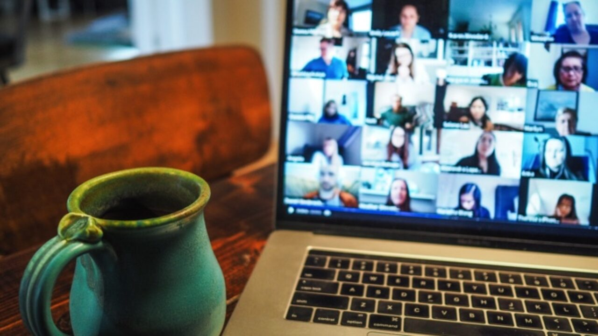

Every month, I host a book club over Zoom with a group of other folks who have read my book of the month! I've found that talking through books is almost like reading them all over again, but with brand new eyes. It's amazing how much others' insights and perspectives can change the meanings you derive from what you read. And the more diverse the perspectives the better! That is to say, this book club is a safe space for all regardless of race, sexual orientation, gender identity, physical ability, or immigration status. We're just a community that really loves to read and excitedly chatter about what we read! If that interests you, please fill in the intake form below so you can receive a Zoom link to next month's book club!
Last month, we talked about the book American Dirt by Jeanine Cummins. This book cast a light on the cartel-violence in Mexico, that drives millions to the United States border for refuge. The story followed a bookstore owner, Lydia, and her son Luca, who make that ardous journey north, when they are forced to flee when Lydia's husband, a journalist, writes unfavorably about the cartel in newspapers that causes them to retaliate violently. This book was incredibly gripping, poignant and moving, and stirred up some interesting discussions around U.S./Mexico border relations, the hardships of refugees and immigrants, and the crisis of targeted journalists - and consquently a targeted democracy - in Mexico.

Intake form:
→First name:
→Email:
→Let me know a little about you and why you're interested in joining!: